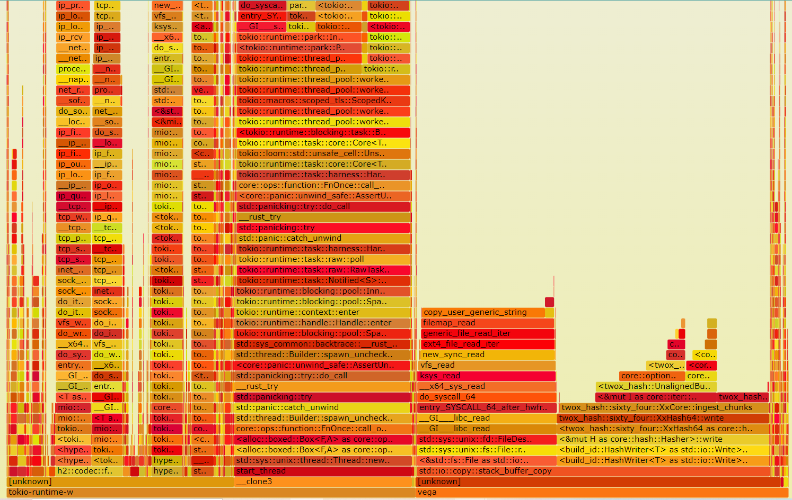
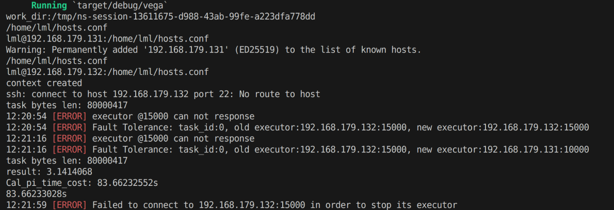
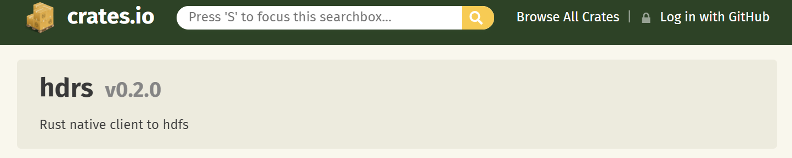
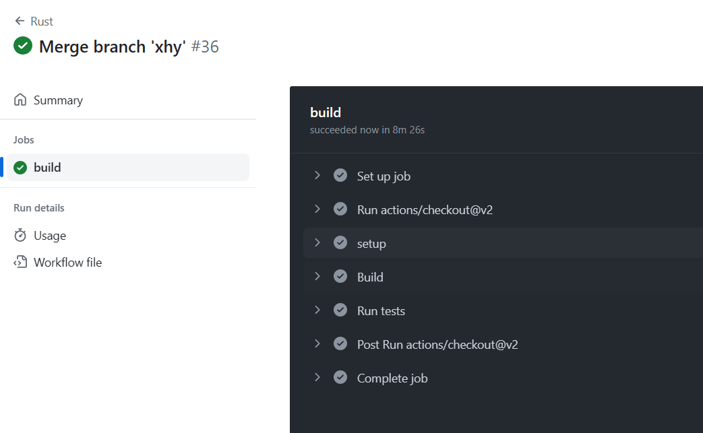
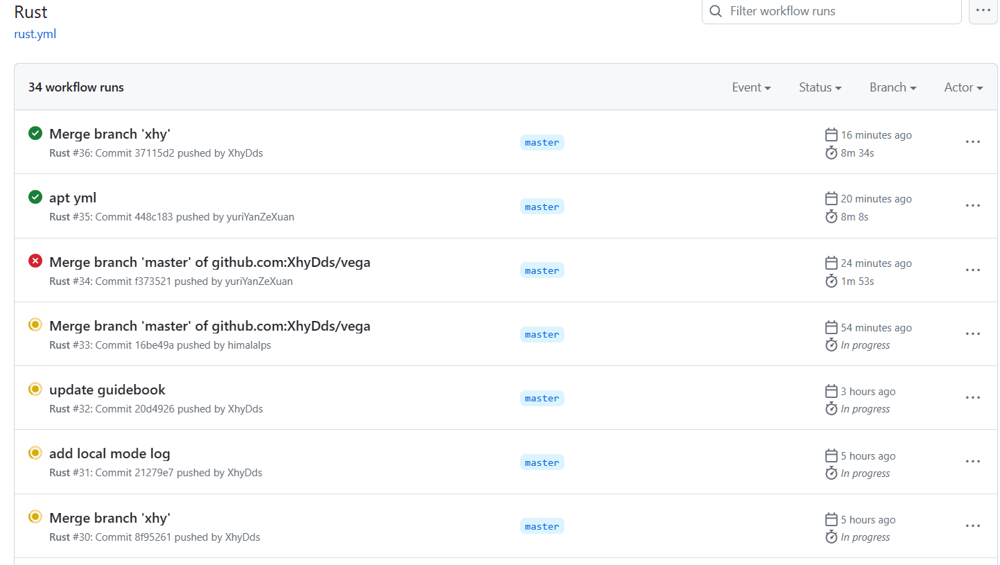

基于Rust语言对Apache Spark性能瓶颈的优化
This-Lynx
闫泽轩 李牧龙 罗浩铭 汤皓宇 徐航宇
目录
1 项目介绍
2 立项依据
3 具体改进
4 测试结果
5 项目总结
1 项目介绍
基于Rust版Spark开源项目vega


项目架构

2 立项依据
Rust语言
-
安全性
-
高性能
-
并发性
分布式计算框架
-
Apache Hadoop
-
Apache Spark
-
Ray
-
. . .
Spark和RDD

3 具体改进
改进依据

Shuffle优化
Shuffle介绍
将输入的M个分区内的数据“按一定规则”重新分配到R个分区上。 - 各个节点上相同key的内容写入主节点磁盘文件中 - 相同key的数据将被拉取到同一个分区进行聚合操作
最大的性能瓶颈!
Hash Shuffle Manager
- 对每一对Map和Reduce端的分区配对都产生一条分区记录，原版Spark生成一个文件存入，Vega将Shuffle记录保存在以DashMap(分布式HashMap)实现的缓存里
- 由于生成的文件数过多，会对文件系统造成压力，且大量小文件的随机读写会带来一定的磁盘开销，故其性能不佳

Sort Shuffle Manager
- 数据会根据目标的分区Id（即带Shuffle过程的目标RDD中各个分区的Id值）进行排序，然后写入一个单独的Map端输出文件中，而非很多个小文件
- 输出文件中按reduce端的分区号来索引文件中的不同shuffle部分
- 大幅减小了随机访存的开销与文件系统的压力，不过增加了排序的开销

我们的优化
在我们对Vega中shuffle逻辑的优化中，由于使用了DashMap缓存来保存Shuffle记录，我们无需进行排序，直接按reduce端分区号作为键值写入缓存即可。这既避免了排序的开销，又获得了SortShuffle合并shuffle记录以减少shuffle记录条数的效果。这样，shuffle输出只需以reduce端分区号为键值读出即可。
Shuffle优化测试结果
使用两千万条shuffle记录的载量进行单元测试，测试结果如下：
（Map端有M个分区，Reduce端有R个分区，$M\cdot R=20000000$）
 | 时间/s | 1 | 2 | 3 | 平均 |
| :----: | :---: | :---: | :---: | :---: |
| 优化前 | 9.73 | 10.96 | 10.32 | 10.34 |
| 优化后 | 6.82 | 5.46 | 4.87 | 5.72 |
| 时间/s | 1 | 2 | 3 | 平均 |
| :----: | :---: | :---: | :---: | :---: |
| 优化前 | 9.73 | 10.96 | 10.32 | 10.34 |
| 优化后 | 6.82 | 5.46 | 4.87 | 5.72 |
运行速度提升了81%
实现容错
VEGA原来的容错情况

容错机制
利用循环队列，在某从机下线时递归地进行任务的重新分发，
保证程序的正常运行，并打印出相关Error信息以供用户检查。

效果展示

加入HDFS文件系统
HDFS
- Hadoop DFS
- 基于GFS开发
实现目标
- 从HDFS读文件
- 利用读取的数据生成Rdd
- 将数据写入HDFS
Hdrs
 - 用Rust包装HDFS的C接口 - 实现了Read、Write等Trait，功能丰富
读取数据/生成Rdd
- 不能仅由主机读取
- HdfsReadRdd
- compute阶段读取
- 可以解码数据
写入数据
- 仅由主机写入
添加实时监控拓展模块
监控工具
- Prometheus
- Grafana
- node_exporter
基于Docker直接部署
效果展示

效果展示


自动化测试




4 测试结果


5 项目总结
组员分工
- 闫泽轩（组长）：负责会议日程议程安排，对项目正确性进行测试，编写测试样例和部署测试。
- 李牧龙：为Vega增加了HDFS的读写接口和用于调试的本地读文件接口，进行Vega和Spark的分布式运行对比测试，编写wordcount样例
- 罗浩铭：对Vega的Shuffle模块进行优化，编写项目测试样例
- 汤皓宇：对vega进行Docker部署，添加性能监控拓展模块，负责每次会议的记录整理
- 徐航宇：负责Vega运行环境与配置文件的创建，撰写及维护用户手册，并为Vega实现容错机制
进度管理
| 时间进度 | 计划进度 | 实际进度 |
|---|---|---|
| 第八周 | 系统学习rust | 以lab2, lab3为抓手在实验中学习Rust |
| 第九周 | 编译，测试Vega模块 | 修复了原版Vega编译失败，部署失效的Bug |
| 第十周 | 定位Vega模块 | 分配任务量，借鉴Spark对Vega代码进行阅读和理解 |
| 第十一到十三周 | 编写优化对象模块 | 测试Vega分布式部署，开会写注释 |
| 第十四到十五周 | 添加拓展模块 | 完成lab4, 推进HDFS加入文件系统及容错机制的编写 |
| 第十六周 | 跑benchmark部署测试 | 编写测试样例，准备进入考试周 |
| 第十七周 | 无 | 考试周放空 |
| 第十八周 | 无 | 连续五天开会高强度工作，完成所有既定任务并撰写报告和展示 |
项目意义与前瞻性
- Vega继承了Spark的诸多优点
- Vega吸收了Rust语言的诸多优良特性
- 我们对Vega项目进行了诸多优化，进一步提升了其性能
未来的优化方向
减少序列化反序列化开销

构建更加用户友好的API
- Rust的类型机制较为复杂
- 原有的RDD算子类型不够丰富

建立更加完善的容错机制
- Lineage（血统）机制实现容错
- 降低容错为程序运行带来的成本